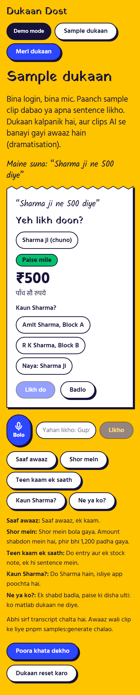
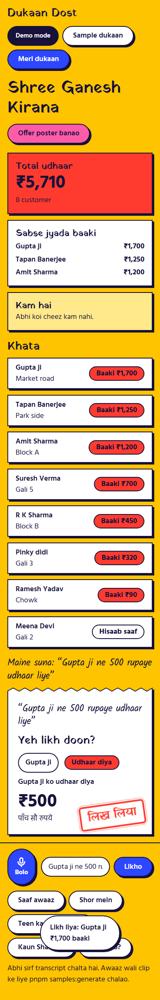

Dukaan Dost
बोलो, लिखो मत।
Kirana ka udhaar, aapki awaaz se. Hindi aur English. Har entry par aapki tasdeeq. Demo data fictional hai.
लिख लियाDukaan Dost
Counter par bheed, haath mein saaman, udhaar yaad rakhna.
Yeh ek chitr hai (illustration), kisi asli dukaandaar ya graahak ki photo nahi.
Dukaan Dost
Bolo, parchi banta hai, stamp lagta hai.


Dukaan Dost
Abhi aap khud try kijiye.
Bina login, bina mic. Paanch sample clip dabaiye ya apna sentence likhiye.
dukaan-dost.onrender.com/try
Fictional practice: koi asli message ya payment nahi. Clips AI awaaz hain. Release ke baad link verify karna hai.
Dukaan Dost
लिख लियाModel sujhata hai, aap tay karte hain.
Har entry par aapka tap.
₹500, पाँच सौ रुपये.
Paise mile ya udhaar diya, sirf rang nahi.
Entry void hoti hai, record rehta hai.
Har badlaav ka nishaan, balance entries se banta hai.
Draft dekho, recipient check karo, phir bhejo. Koi automatic send nahi.
Hum yeh nahi kehte ki AI galti nahi karta. Hum kehte hain: tap ke bina galti save nahi hoti.
Dukaan Dost
Sach, bina badhaye.
Humne kya naapa
- Direction, confirmation aur duplicate checks
- Shop isolation, recovery aur stock history
- Unit, browser aur accessibility assertions
Abhi tak nahi naapa
- Dukaan ke shor mein natural speech accuracy
- Asli phones
- Asli dukaandaar
- Paise dene ki ichchha
Automated checks field evidence nahi hain. Latest run: repo ke verification report mein.
Dukaan Dost
Business model aur channel.
Yeh sab hypotheses hain, saabit nahi.
Dukaan ke liye muft shuruaat; reminders aur backup jaise extras ke liye chhota monthly plan. Kya dukaandaar dega? Pata nahi.
Dukaandaar se dukaandaar, aur local wholesalers ya dukaan associations. Abhi kisi se baat nahi hui.
Dukaan Dost
Aage kya karenge.
Asli dukaandaar, unki sahmati se, asli awaaz. Tab live accuracy naapenge.
Dekhenge ki log kitna dene ko tayyar hain, ya bilkul nahi.
Authorized real-phone receipt aur restore rehearsal. Official WhatsApp migration ke liye credentials abhi chahiye.
Link: dukaan-dost.onrender.com/try